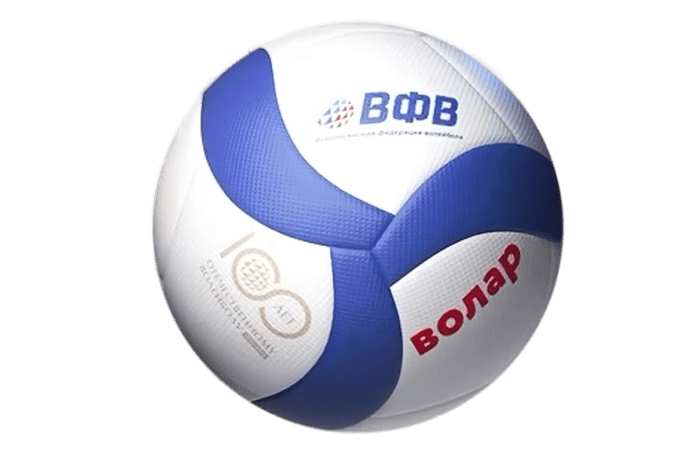

Создание волейбола
Волейбол был изобретён в 1895 году Уильямом Дж. Морганом, преподавателем физического воспитания колледжа Ассоциации молодых христиан в городе Холиоке.
Новая игра изначально называлась «Минтонет». Морган позаимствовал сетку из тенниса и установил её на высоте приблизительно 196 см от пола, так чтобы сетка была чуть выше головы человека среднего роста.
Первый официальный матч был сыгран в 1896 году в колледже Спрингфилда. В этом же году профессор Альфред Т. Хальстед из Спрингфилдского колледжа предложил переименовать игру в «волейбол».
Развитие игры
Хронология развития:
| Год | Событие | Описание |
|---|---|---|
| 1895 | Создание игры | Уильям Морган изобретает волейбол |
| 1900 | Правила игры | Установлены первые официальные правила |
| 1922 | Чемпионаты | Проведены первые национальные чемпионаты |
| 1947 | Международная федерация | Создана FIVB (Международная федерация волейбола) |
| 1964 | Олимпийские игры | Волейбол включён в программу Олимпийских игр |
| 1996 | Пляжный волейбол | Пляжный волейбол становится олимпийским видом спорта |
Современный волейбол
Сегодня волейбол - один из самых популярных видов спорта в мире. В волейбол играют более 800 миллионов человек по всему миру.
Разновидности волейбола:
- Классический волейбол (6x6).
- Пляжный волейбол (2x2).
- Мини-волейбол.
- Пионербол.
- Волейбол сидя (паралимпийский вид спорта).